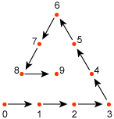
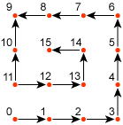

Defines a Bézier control patch. The array defines the control points for the patch.
template Patch
{
< A3EB5D44-FC22-429D-9AFB-3221CB9719A6 >
DWORD nControlIndices;
array DWORD controlIndices[nControlIndices];
}
Where:
The type of patch is defined by the number of control points, as shown in the following table.
| Number of control points | Type |
|---|---|
| 10 | Cubic Bézier triangular patch |
| 15 | Quartic Bézier triangular patch |
| 16 | Cubic Bézier quad rectangle patch |
Â
The order of the control points are given in a spiral pattern, as shown in the following diagrams for triangular and rectangular patches.
Triangular patches use the following pattern.

Rectangular patches use the following pattern.

Â
Â